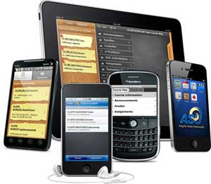

Security issues involved in mobile
Links:
Mobile security has become increasingly important in mobile computing. It is of particular concern as it relates to the security of personal information now stored on the smartphone. Mobile applications might copy user data from these devices to a remote server without the users’ permission and often without the users’ consent.[4] The user profiles automatically created in the cloud for smartphone users raise privacy concerns on all major platforms, in terms of, including, but not limited to, location tracking[5] and personal data collection,[6] regardless of user settings on the device.
More and more users and businesses use smartphones as a means of planning and organizing their work and private life. Within companies, these technologies are causing profound changes in the organization of information systems and therefore they have become the source of new risks. Indeed, smartphones collect and compile an increasing amount of sensitive information to which access must be controlled to protect the privacy of the user and the intellectual property of the company.
All smartphones are preferred targets of attacks. These attacks exploit weaknesses related to smartphones that can come from means of wireless telecommunication like WiFi networks and GSM. There are also attacks that exploit software vulnerabilities from both the web browser and operating system. Finally, there are forms of malicious software that rely on the weak knowledge of average users.
Different security counter-measures are being developed and applied to smartphones, from security in different layers of software to the dissemination of information to end users. There are good practices to be observed at all levels, from design to use, through the development of operating systems, software layers, and downloadable apps.
